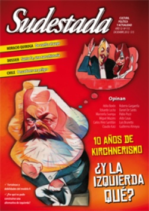

Buscar
Periodismo en tiempos de tormenta
<doc837|center>
Edición N° 115
Diciembre 2012
Revista bimensual
Comprar edición impresaSumario
- ¿Y la izquierda qué?
- Periodismo en tiempos de tormenta
- Con la lucha, de estreno
- El poeta que se comió un cisne
- Dora María Téllez
- Tierra de amor, de locura y de muerte
- El hombre del rincón rojo
- Un mar de incertidumbre
- Un títere desborda el alma
- El gran libro del Mundo
- Apuntes para una narcohistoria
Compartir Articulo
No existen las condiciones ideales para desarrollar un medio autogestivo. Desde su origen, dificultades y obstáculos forman parte esencial de la construcción de su identidad. De allí que abundar en limitaciones e injusticias cotidianas termine muchas veces por quitar tiempo a discusiones más interesantes. Frente a un escenario mediático de profunda polarización, donde el doble discurso queda expuesto ante cualquier mirada más o menos aguda, el rol de los medios alternativos no deja de sumar importancia. Al margen de la disputa por intereses comerciales, a un costado del paisaje de mercenarios y conversos alineados para defender las ganancias de sus patrones o los cargos de sus punteros, observadores apenas de esa confrontación por mantener o alcanzar porciones de poder; el rol de la prensa no alineada con empresarios y funcionarios enfrenta hoy un desafío sustancial. La opción que se presenta, entonces, es crecer preservando la independencia, apostando a diferenciarse a cada paso y resguardando como único capital aquello que nos hace alternativos; o perderse y caer en el vicio de limosnear al Estado prebendas, buscar el lucro como motor de propulsión y anhelar intervenir en esa disputa pareciéndonos cada vez más a todo aquello que criticamos.
No será con cinismo que habrá que intentar ser cuña en este clima polarizado. Ese cinismo que nada toma en serio, que siempre replica desde la rebeldía de bolsillo pero que oculta, en verdad, un alto grado de esa soberbia tan típica de quienes se suponen dueños de una Verdad que los demás nunca alcanzan a comprender, pero que casi siempre terminan ocupando el triste papel de simpáticos bufones del poderoso. No es con ellos que será viable construir opciones reales. Tampoco con aquellos que de alternativo sólo mantienen la artesanía de su subsistencia: esos que, en verdad, sueñan con acomodarse a la sombra de gigantes corporativos y repiten el mismo modelo, pero desde los márgenes.
Serán quienes comprendan que el desafío es defender otros intereses, apostar al crecimiento de otro periodismo ligado estrechamente a lo popular y sustentado en la irrupción de una nueva alternativa política, los que carguen con la responsabilidad de ir más allá de la denuncia. Nada es sencillo desde otro lado; la batalla es cotidiana y las herramientas son limitadas. En todo caso cada uno, desde la trinchera de sus páginas, de su radio, de su pantalla, deberá apelar al compromiso para no dejarse llevar por los vicios del sistema y apostar a la coherencia para hacerse escuchar. Sin la cándida gracia de los cínicos, sin la molesta urgencia de los oportunistas, procurando ensayar de todas las maneras posibles, el borrador de una historia que nunca se olvide de los pibes fusilados por la policía en las barriadas, de los vecinos que resisten en Andalgalá y Famatina, de los qom reprimidos en Formosa, de los campesinos ejecutados en el monte, ni de los nenes fumigados con agrotóxicos desde el aire. Que comparta con los pasajeros del Sarmiento el absurdo de un sistema que no se preocupa por la vida de sus trabajadores, que sepa de los aprietes de la patota sindical, que exija el empleo digno para millones de precarizados, que nunca se abrace con la Sociedad Rural, pero tampoco con Monsanto y Barrick Gold. Y lo más complejo: que sepa escuchar. Que no se resigne. Que sea capaz de sentirse orgulloso de participar de una pelea que lo excede, pero que ya es semilla y comienza a germinar.
Editorial II: Gaza
Al cierre de esta edición, una nueva ofensiva criminal del ejército de ocupación israelí contra el pueblo de Palestina arrojaba un saldo de más de un centenar de civiles, muchos de ellos niños, asesinados en Gaza. Es curioso como, frente a algunos sucesos, los archienemigos de la prensa terminan igualando conclusiones y hasta apelando a los mismos eufemismos, hipócritas y miserables. Si el opositor Clarín habla de "guerra" y de "lluvia de misiles entre Israel y Hamas"; el oficialista Página/12 enfatiza que "el fuego cruzado no cesa" y hasta propone como título de tapa: "Una apuesta por la paz". No sólo pretenden igualar la violencia "de ambos bandos" sino que, de un modo salomónico, sin comprender ni estudiar nada sobre una ocupación con más de medio siglo de historia, hasta proponen a la ligera la farsa de la "coexistencia pacífica" y ocultan, en realidad, un deseo de que la situación permanezca inalterable. Pretender que el oprimido acepte convivir con el opresor después de seis décadas de humillación, apartheid e impunidad, sólo puede compararse con aquellos que sugieren que la mujer golpeada conviva "en armonía" con su marido golpeador. Por ignorancia o complicidad y más allá de sus ocasionales disputas de intereses financieros, está claro que a la hora de distorsionar la información, pocos superan a la prensa argentina.
Comentarios

Sudestada
El colectivo de Revista Sudestada esta integrado por Ignacio Portela, Hugo Montero, Walter Marini, Leandro Albani, Martín Latorraca, Pablo Fernández y Repo Bandini.
Articulos más vistos


LIBRERÍA SUDESTADA

Colección infantil

Distribuidora de Libros

Suscripción

Sudestada en URUGUAY

Otros articulos de esta edición
¿Y la izquierda qué?
A poco de cumplirse una década de gestión kirchnerista, doce militantes e intelectuales de izquierda analizan el presente político y ...
Dora María Téllez
Una muchacha muy bella, tímida y absorta, con una inteligencia y buen juicio que le habrían servido para cualquier cosa ...
Tierra de amor, de locura y de muerte
"En San Ignacio, Quiroga es ignorado, menospreciado, a veces detestado", escribió Rodolfo Walsh allá por 1967 en una crónica inoxidable. ...
El hombre del rincón rojo
En los pasillos del mítico Almagro Boxing Club, desde hace doce años Fernando Albelo es el entrenador y, sobre todo, ...
El poeta que se comió un cisne
El poeta de figura delgada que dejó su impronta en libros, canciones y revistas acepta del desafío de un ping-pong ...
El gran libro del Mundo
Fotografías en blanco y negro y en colores, fragmentos de cartas, mails y apuntes de viaje por América, por Asia ...